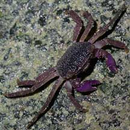
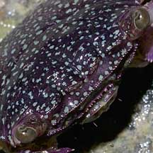
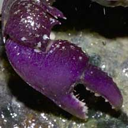
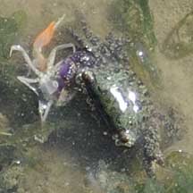
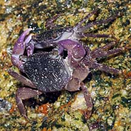

|
|
| crabs text index | photo index |
| Phylum Arthropoda > Subphylum Crustacea > Class Malacostraca > Order Decapoda > Brachyurans > Family Grapsidae |
| Purple
climber crab Metopograpsus sp.* Family Grapsidae updated Dec 2019
Where seen? This small purple crab is commonly seen on our rocky shores in the North and South. Usually only active at night. During the day, it is usually well hidden in crevices. Features: Body width 2-4cm. Body somewhat squarish, eyes set wide apart. Colours vary from purplish, bluish to greenish, yellowish, grey. It has stout purplish pincers. The walking legs are very long and tipped with well developed hooks. With these legs, the crab clings tightly so it doesn't get washed away in the waves, and can scramble quickly among slippery rocks. There are three different species of Metopograpsus but they are difficult to distinguish in the field. Males have larger pincers than females. What does it eat? It eats mainly algae, scrapping this off with its pincers which are scalloped on the inner edge. But it will also scavenge on any other edible things it can find. |
|
 Kusu Island, Apr 04 |
 |
 Scalloped pincers |
*Species are difficult to positively identify without close examination.
On this website, they are grouped by external features for convenience of display.
| Purple climber crabs on Singapore shores |
On wildsingapore
flickr
|
| Other sightings on Singapore shores |
 Grabbed a fiddler crab then headed back to the boardwalk legs. Chek Jawa, Jan 10 |
 A pair, getting ready to mate? St. John's Island, May 10 |

| Metopograpsus
species recorded for Singapore from Wee Y.C. and Peter K. L. Ng. 1994. A First Look at Biodiversity in Singapore +from The Biodiversity of Singapore, Lee Kong Chian Natural History Museum. in red are those listed among the threatened animals of Singapore from Ng, P. K. L. & Y. C. Wee, 1994. The Singapore Red Data Book: Threatened Plants and Animals of Singapore
|
Links
|